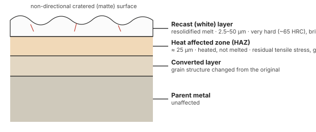

Unit 3 · Lesson 6 of 12 · ~30 min
EDM in full: parameters, damage, uses, and the numbers
This lesson closes EDM. By the end you can write End-sem 2025 Q3(a) for 5/5 and solve every EDM numerical on Tutorial Sheet 5 & 6.
State how current, pulse duration, frequency, voltage, gap and dielectric change MRR and finish; describe the EDM'd surface layers; and turn energy-per-spark data into MRR.
Effect of process parameters
| Parameter ↑ | MRR | Surface roughness | Other effects |
|---|---|---|---|
| Discharge (peak) current | ↑ bigger crater per spark | ↑ rougher | More tool wear and overcut (Jain Fig 7.11a–b) |
| Pulse on-time (duration) | Past a short optimum, ↓ (unsteady machining above ~20 µs in Jain's data) | ↑ rougher, wider craters | Relative electrode wear ↓; deeper HAZ and longer microcracks (above ~800 µs, abnormally long cracks) |
| Pulse off-time | Too long: ↓ (idle). Too short: arcing | — | Needed for deionisation and flushing between sparks |
| Spark frequency (same current) | roughly same energy rate | ↓ smoother: energy shared by more, smaller craters | Used for finishing (Jain Fig 7.11c) |
| Gap / breakdown voltage | ↑ more energy per spark | ↑ rougher | Larger gap → lower accuracy. Smaller gap → lower MRR, better finish and accuracy |
| Dielectric | DI water > hydrocarbon oil; good flushing can raise MRR ~10× | Clean, well-flushed gap gives better finish | Water: more tool wear, corrosion risk, no fire risk, thinner recast. Small debris contamination shortens ignition delay; heavy contamination causes arcs and shorts |
| Polarity / electrode | Normal polarity for most work | Copper gives better finish than brass | Graphite on reverse polarity for low-wear settings |
Sources: Jain p.147–153 (Figs 7.11–7.16); Jagadeesha §6.17–6.18.
Anything that puts more energy into one spark (current, voltage, on-time, capacitance) makes bigger craters: more MRR, rougher surface, deeper damage. Anything that splits the same energy into more, smaller sparks (frequency) improves finish. That one sentence answers most "effect of parameters" questions.
Surface integrity: what EDM leaves behind

- Recast (white) layer: melt that was not flushed and refroze. About 2.5–50 µm thick, very hard (~65 HRC, martensitic on steel), brittle, porous, with microcracks. Remove it before service.
- Heat-affected zone: about 25 µm. Heated but not melted; residual tensile stress and grain-boundary cracks.
- Converted layer: grain structure changed from the original.
Consequence: the endurance limit of spark-eroded steel was about 15% lower than turned steel (Jain, p.156). Remedies: low-energy finishing passes (below about 3 µs pulses microcracks are hardly seen), removing the recast layer, and shot peening, which restores fatigue strength. The craters themselves give a non-directional matte surface that holds lubricant, which is good for dies.
Applications
- Dies and moulds in hardened steel and carbide: forging, die-casting, plastic injection moulding, stamping, extrusion and wire-drawing dies. About 80–90% of EDM work is tool and die making (Jagadeesha §6.14).
- Small, deep holes down to ~50 µm: fuel injector nozzles, cooling holes in turbine blades, aspect ratios up to 100:1.
- Removing broken taps, drills and studs from expensive parts.
- Shapes that cutting tools cannot make: square and D-holes, splines, narrow slots, blind keyways.
- Thin, fragile parts: no cutting force.
- Machining after heat treatment, so distortion from hardening is avoided.
Advantages
- Any conductive material, regardless of hardness
- Complex shapes reproduced from a soft, easily made tool
- No cutting force: thin and fragile work is safe
- Burr-free; good accuracy and repeatability
- Can be done after hardening
- Runs unattended once set up
Limitations
- Work and tool must be electrically conductive
- Low MRR (0.1–10 mm³/min per ampere)
- Tool wear: overcut, corner rounding, extra electrodes
- Recast layer, HAZ, microcracks; fatigue strength ↓
- Sharp internal corners impossible (radius ≈ gap)
- High power consumption; fire risk with oil dielectric
EDM vs ECM (Unit 2 link)
| Aspect | EDM | ECM |
|---|---|---|
| Principle | Spark erosion: melting and vaporisation | Anodic dissolution (Faraday's laws) |
| Medium | Dielectric (insulator until breakdown) | Electrolyte (conductor) |
| Power | Pulsed DC (typically 80–100 V at the gap) | Continuous low-voltage DC (5–25 V), very high current |
| Tool wear | Yes | Practically none |
| Heat / surface damage | Recast layer, HAZ, microcracks | No thermal damage, stress-free |
| MRR | Low | High (much higher than EDM) |
| Accuracy, finish | Better dimensional control | Good finish; overcut harder to control |
| Tool design | Simpler | Complex (gap varies with flow) |
After Jagadeesha Table 6.8 and Jain Ch 11.
The full-marks answer
5 marksEnd-sem Nov 2025, Q3(a): Explain the principle, working and process parameters of EDM with a neat sketch. Discuss the influence of discharge current, pulse duration and dielectric on MRR and surface finish. Highlight its industrial applications and limitations.
Principle (½ mark). EDM removes conductive material by controlled, repetitive spark discharges between a tool electrode and the workpiece separated by a dielectric. Each spark melts and vaporises a tiny crater.
Sketch (1 mark). Pulsed DC generator; servo-fed tool (−); work (+) in dielectric tank; spark gap; pump and filter.
Working (1 mark). (1) Field concentrates at the narrowest gap. (2) Dielectric ionises; plasma channel at ~10,000 °C. (3) Local melting and vaporisation under high channel pressure. (4) At pulse-off, pressure collapses and melt is ejected; dielectric quenches and flushes debris. (5) Servo keeps the gap; craters reproduce the tool shape.
Parameters (1½ marks). Voltage, peak current, pulse on/off time, frequency, gap, polarity, dielectric and flushing.
- Discharge current ↑: larger crater per spark, so MRR ↑ but roughness ↑ and tool wear ↑.
- Pulse duration ↑: wider, deeper craters, so finish worsens; beyond an optimum MRR falls; relative electrode wear falls; HAZ and cracks deepen.
- Dielectric: deionised water gives higher MRR and cooling but more tool wear; oil gives lower wear. Effective flushing raises MRR many-fold and improves finish; contaminated gaps cause arcs.
Applications (½ mark). Dies and moulds in hardened steel/carbide, fine deep holes (injector nozzles, turbine cooling holes), broken-tap removal, complex shapes, fragile parts.
Limitations (½ mark). Conductive materials only; low MRR; tool wear and overcut; recast layer and HAZ reduce fatigue strength; sharp corners difficult.
Numericals
Keep everything in SI (W, J/kg, kg/m³) until the last line, then convert m³/s → mm³/min (× 10⁹ × 60).
Tutorial Q1. Pulse current 5 A, discharge voltage 120 V, on-time 100 µs, period 500 µs (duty 0.2). 20% of the electrical energy goes into removal. Steel: latent heat (vaporisation + heating) ≈ 6.3 × 10⁶ J/kg, density 7800 kg/m³. Estimate MRR.
Tutorial Q2. A single spark releases 0.6 J; 50% goes into melting. Effective melting energy ≈ 3.0 × 10⁵ J/kg; steel density 7800 kg/m³. Treat the crater as a hemisphere. Find the crater radius.
Tutorial Q5. Ra ∝ √(energy per pulse). E = 0.8 J and k = 0.5 µm/√J. Find Ra.
Tutorial Q7. MRR = 50 mm³/min with 300 W going into the workpiece. Find the specific energy.
Tutorial Q8. Electrode diameter 6.00 mm; machined hole 6.12 mm. Find the overcut (per side). Then express it as a percentage of electrode diameter.
If the examiner means diametral overcut: 0.12 mm = 2%. Overcut is normally quoted per side; state your convention.
End-sem Nov 2025, Q3(c). Discharge energy per spark E = 0.5 × 10⁻³ J at 20,000 sparks/s. Removal efficiency 60%; work density 7.8 g/cm³. Find MRR in mm³/s and mm³/min. The paper gives no specific energy, and says missing data may be assumed. Assume the steel value from the tutorial sheet, u ≈ 6.3 × 10⁶ J/kg.
Write the assumption in a box: "Assume energy to remove 1 kg of steel (heating + melting + vaporisation) ≈ 6.3 MJ/kg". If you assume melting only (3 × 10⁵ J/kg), the same method gives 2.56 mm³/s = 154 mm³/min. Either is acceptable if stated. The method is what earns the marks.
Quick check
1. Increasing discharge current in EDM…
- Lowers MRR and improves finish
- Raises MRR and worsens finish
- Raises MRR and improves finish
- Lowers MRR and worsens finish
More current puts more energy into each spark: bigger craters, more material, rougher surface.
2. The recast layer on an EDM'd die is…
- Soft, ductile and stress-free
- Thick, tough and crack-free
- Annealed, smooth and porous
- Hard, brittle and microcracked
Rapidly quenched melt: about 65 HRC, brittle, porous, microcracked. It lowers fatigue life and should be removed.
3. To get a fine finish without losing much accuracy, you would…
- Use low energy, high frequency
- Use high energy, low frequency
- Use high current, long pulses
- Use large capacitance, high voltage
Small energy per spark gives small craters; high frequency keeps material moving. This is the finishing setting.
4. Which application is EDM NOT suited to?
- Removing broken taps from dies
- Machining hardened steel mould cavities
- Cutting glass and ceramic plates
- Drilling fuel injector nozzle holes
Glass and most ceramics are insulators, so no spark can form. Use LBM, USM or AJM instead.